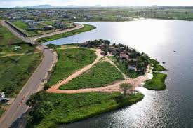
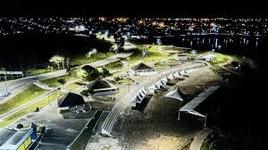
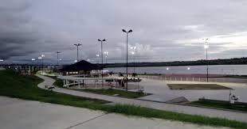

O Lago da Perucaba, no bairro de Zélia Barbosa Rocha, possui detalhes arquitetônicos e urbanísticos que ganham contorno ainda mais bonito durante o pôr-do-sol. É equipado de estabelecimentos comerciais, duas quadras poliesportivas, duas outras de areia, ciclovia, área de passeio, praça de eventos, playground, espaço Sesc Ler e, ainda, no final de sua extensão, o Planetário Digital Municipal, o maior do gênero no Brasil.
  